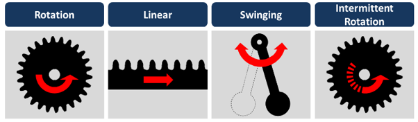

This training manual is designed to help shop floor members and engineers to improve their problem-solving skills and increase productivity. These techniques involve using simple machines and tools to automate repetitive tasks, such as sorting and packaging items. By learning these techniques, one can identify areas where they can save time and reduce waste, leading to a more efficient work environment.
Karakuri is written in Japanese most commonly as からくり, but sometimes also as 絡繰り, 絡繰, 機巧, or 機関. It originated with mechanical dolls in Japan, called karakuri ningyo (からくり人形). These dolls are first mentioned around 1500 years ago, but were most popular around 200 years ago
Karakuri can perform a wide range of tasks, from sorting and transporting goods to assembling products and improve productivity.
After an introduction to the topic in earlier pages, I would like to show you some fundamental techniques for karakuri.
The simplicity of Karakuri devices is achieved through the use of basic mechanical principles such as levers, springs, and gears. These simple machines can be combined in various ways to create complex movements and actions
